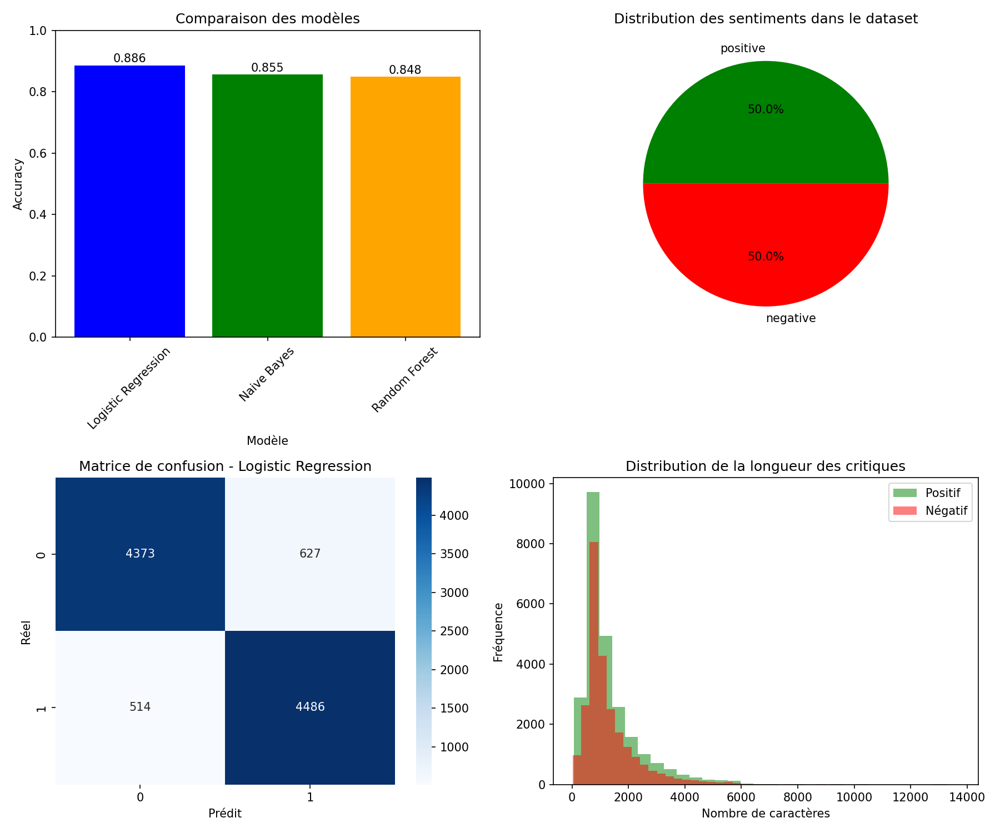

~/projets/analyse-de-sentiments
50 000 critiques de films, positives ou négatives.
Problème
Déterminer automatiquement si une critique de film est positive ou négative.
Ce que j'ai fait
Un pipeline Python modulaire, du nettoyage du texte à la prédiction, avec trois modèles comparés et un modèle final sauvegardé.
Résultat
88,6 %d'accuracy avec la régression logistique, devant Naive Bayes et Random Forest.
pipelineDu texte brut au modèle
- Prétraitement : minuscules, retrait des balises <br> et des chiffres, suppression des stop-words et lemmatisation avec NLTK (WordNet).
- Vectorisation TF-IDF sur uni- et bigrammes, limitée aux 5 000 termes les plus fréquents. Découpage 80 / 20 stratifié.
- Entraînement de trois modèles : régression logistique, Naive Bayes et Random Forest.
- Évaluation et sauvegarde du meilleur modèle, du vectoriseur et du préprocesseur pour prédire de nouvelles critiques.
résultatsPerformances des modèles
| Modèle | Accuracy |
|---|---|
| Régression logistique | 88,6 % |
| Naive Bayes | 85,5 % |
| Random Forest | 84,8 % |
| Régression logistique | Prédit négatif | Prédit positif |
|---|---|---|
| Réel négatif | 4 373 | 627 |
| Réel positif | 514 | 4 486 |

analyse des erreursOù le modèle se trompe
Les critiques très tranchées sont classées avec une probabilité supérieure à 0,99. Les erreurs viennent surtout des avis mitigés (« The movie was okay ») et des critiques ironiques, où les mots positifs et négatifs se compensent.
Les erreurs sont équilibrées entre les deux classes (627 et 514) : le modèle n'a pas de biais marqué vers « positif » ou « négatif ».
codeUn projet organisé pour être repris
Le code est découpé en modules (data_loader, preprocessing, train_model, evaluate, visualize) et pilotable par un seul main.py. Une fonction permet de prédire le sentiment d'une nouvelle critique à partir du modèle sauvegardé.